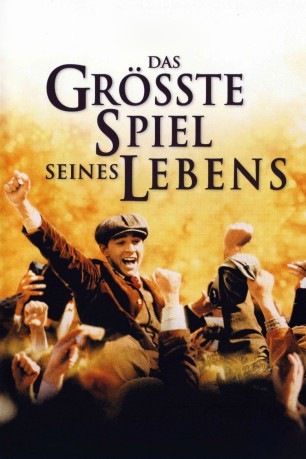
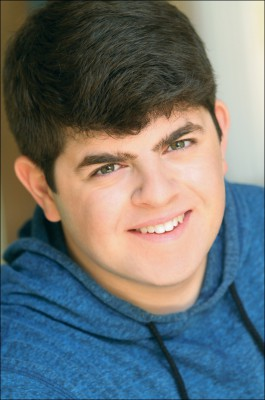

#1072 Das Größte Spiel seines Lebens
Alternativ: The Greatest Game Ever Played
 
 IMDB-Wertung: 7.5 / 10
IMDB-Wertung: 7.5 / 10  Metascore: 55
Metascore: 55 
Eigentlich ist Francis Ouimet nur ein einfacher Golf-Amateur ohne große Aussichten auf eine Karriere. Doch bei den U. S. Open im Jahre 1913 schreibt er Sportgeschichte. Denn mit einer Reihe perfekter Schläge und der Hilfe seines gerade einmal zehnjährigen Caddies gelingt es Francis völlig unerwartet, ins Finale zu gelangen, in dem er gegen sein eigenes Idol, den amtierenden Weltmeister Herry Vardon, antritt. Von diesem einen Match hängt für Francis ab, ob er sich Hoffnung auf eine bessere Zukunft machen kann. Am nächsten Morgen tritt er an - zum größten Golfspiel, das jemals ausgetragen wurde...
Jahr: 2005
Dauer: 120 Minuten
FSK: 0
Land: USA Studio: Buena Vista PicturesTonspuren:
Untertitel: Deutsch,
Auflösung: 1080p (1920x1040) Größe: 7516 MB
Genre: Biographie, Drama, Geschichte, Sport
Regisseur:  Bill Paxton
Bill Paxton
Drehbuch: Mark Frost, Mark Frost
Soundtrack: Brian Tyler
Darsteller:
- James Paxton als Young Harry Vardon
 Gregory Terlecki als Black Top Hatted Man
Gregory Terlecki als Black Top Hatted Man Jonathan Higgins als Embry Wallis
Jonathan Higgins als Embry Wallis- Matthew Knight als Young Francis Ouimet
 Luke Askew als Alec Campbell
Luke Askew als Alec Campbell- Amanda Tilson als Young Sarah Wallis
 Elias Koteas als Arthur Ouimet
Elias Koteas als Arthur Ouimet- Marnie McPhail als Mary Ouimet
 Stephen Dillane als Harry Vardon
Stephen Dillane als Harry Vardon Peter Firth als Lord Northcliffe
Peter Firth als Lord Northcliffe- Michael Sinelnikoff als Lord Bullock
 Shia LaBeouf als Francis Ouimet
Shia LaBeouf als Francis Ouimet- Justin Ashforth als Ted Hastings
 Len Cariou als Stedman Comstock
Len Cariou als Stedman Comstock Peyton List als Sarah Wallis
Peyton List als Sarah Wallis- Nicolas Wright als Phillip Wainwright
 Max Kasch als Freddie Wallis
Max Kasch als Freddie Wallis- Scott Faulconbridge als Billy
- George Asprey als Wilfred Reid
 Stephen Marcus als Ted Ray
Stephen Marcus als Ted Ray Luke Kirby als Frank Hoyt
Luke Kirby als Frank Hoyt- Tim Peper als Walter Gibbs
- Marc James Beauchamp als Assistant Pro
- Michael Weaver als John McDermott
-  Josh Flitter als Eddie Lowery
- Dennis St John als Wallis' Butler
 Marcel Jeannin als Office Worker
Marcel Jeannin als Office Worker- Jesse Rath als Runner
- Steven Wallace Lowe als Reporter
- Alexis del Vecchio als Ragtag Caddie , uncredited
- Dominique Desrochers als Golf Pro , uncredited
- David Rigby als US PGA marshal , uncredited
- Tom Rack als Black Top Hatted Man
- Armand Laroche als Black Top Hatted Man
- Peter Hurley als Black Top Hatted Man
- Jamie Merling als Young Louise Ouimet
- Eugenio Esposito als Young Raymond Ouimet
- Robin Wilcock als Bernard Darwin
- Arthur Holden als Club Secretary
- Danette Mackay als Mrs. Wallis
- Joe Jackson als Piano Player
- Mike 'Nug' Nahrgang als Baritone
- Dawn Upshaw als Soprano
- James Bradford als Robert Watson
- Pierre Boudreau als Northcliffe's Valet
- Terry Reid als Vernon's Caddy - Tommy
- Stephen Spreekmeester als Ted's Caddy
- Philip Pretten als Comstock's Assistant
- Patrick Whitebean als McDermot's Caddy
- Walter Massey als President Taft
Datei: X:\2005(G-M)\Größte Spiel seines Lebens, Das (2005, FSKo.Al., 1920x1040).mkv seit 16.05.2015
Festplatte: HD 2005(G-Z)-2006(A-Z)
 Es gibt insgesamt 46 Filme in der Gruppe '2005(G-M)'
Es gibt insgesamt 46 Filme in der Gruppe '2005(G-M)'